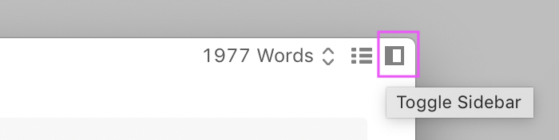
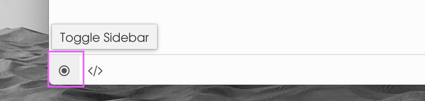
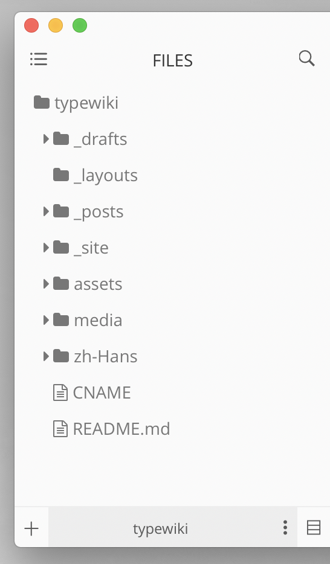
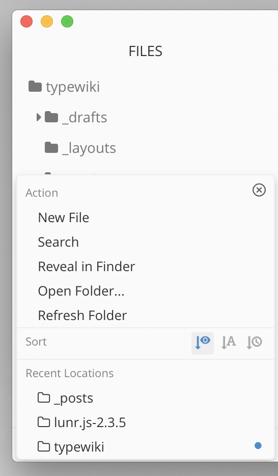
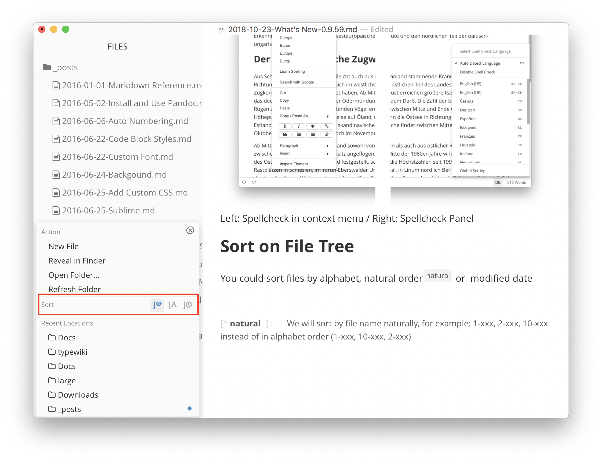
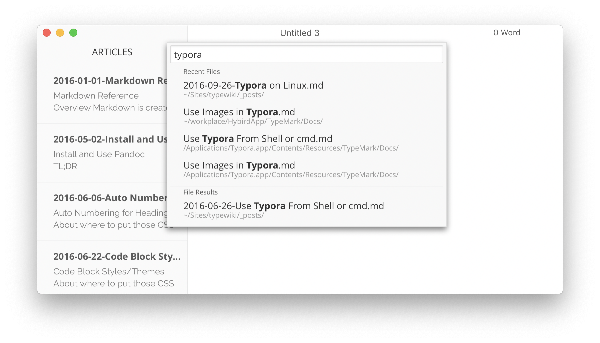
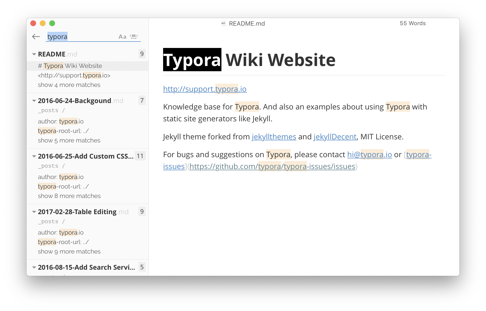
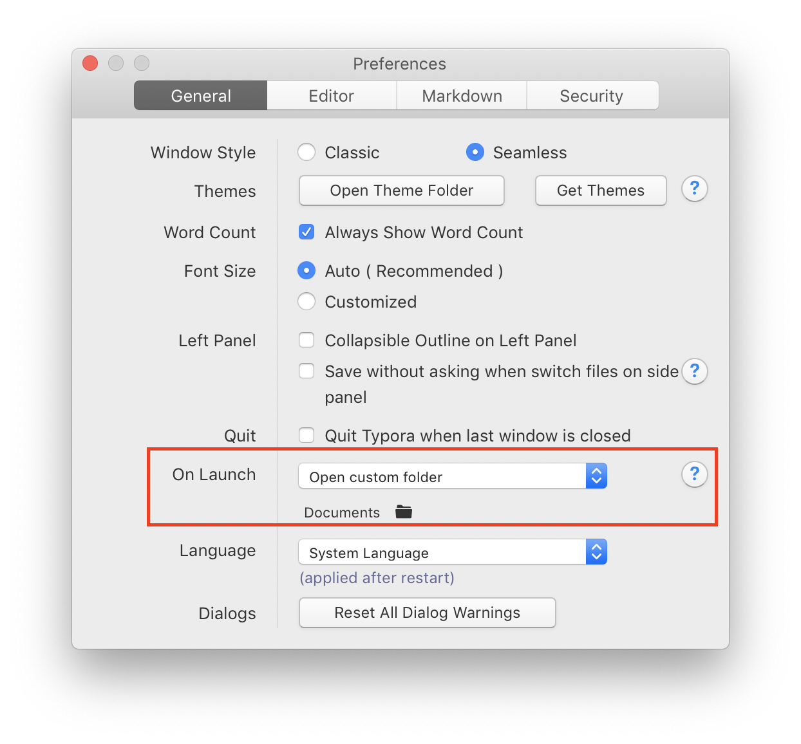
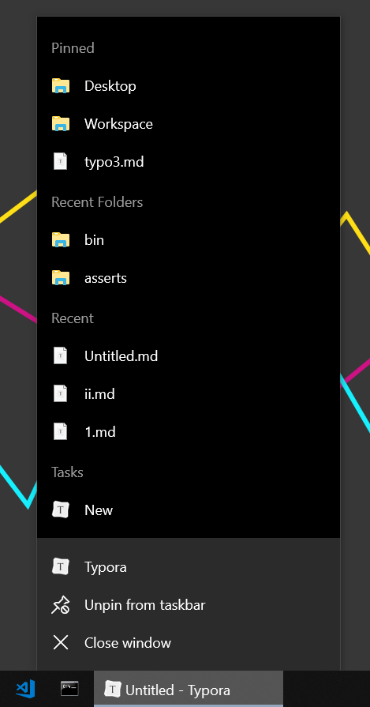

Typora. Управление файлами
Перевод страницы документации Typora File Managementopen in new window.
Открыть каталог
Каталог открывается пунктом меню File -> Open. Когда вы открываете файл, его родительский каталог загружается автоматически. Выбранный каталог отображается в боковой панели, о которой написано ниже.
Боковая панель файлов
Боковая панель включается
- из меню
- из заголовка окна в macOs
- из панели статуса в Windows/Linux
Typora имеет три режима боковой панели:
- Outline Panel (отображает оглавление текущего дкоумента)
- File Tree (отображает загруженный каталог в виде дерева)
- File List (отображает загруженный каталог в виде списка)
Включение боковой панели на macOS:

Включение боковой панели на Windows/Linux: 
В режиме дерева отображаются только папки и файлы которые поддерживаются Typora (файлы Markdown, текстовые файлы).
Действия в боковой панели файлов
При наведении мышкой на панель отобразится больше кнопок. Внизу панели файлов находится пункт контекстного меню для текущего каталога.
 
Другие возможности находятся в контекстном меню файлов и каталогов. Поддерживаемые действия:
- Open
- Open in New Window
- Undo File Operations
- New File/Folder
- Duplicate
- Rename
- Delete (Move to Trash)
- Copy File Path
- Reveal in Finder or Explorer
Обновление списка файлов
Typora наблюдает за изменения файлов в открытом каталоге автоматически обновляет список файлов, например, после изменения или перемещения файлов.
В случае некорректного обновления списка, сделайте ручное обновление нажав пункт Refresh нижнего меню боковой панели.
Переключение каталога
Нажмите пункт “Open Folder… в меню боковой панели для открытия или переключения текущего каталога.
Сортировка файлов
Доступны три варианта сортировки файлов:
- По алфавиту.
- Естественный порядок. Например, 1-xxx, 2-xxx, 10-xxx вместо сортировки по алфавиту 1-xxx, 10-xxx, 2-xxx.
- По дате изменения.

Перемещение файлов
Поддерживается перемещение файлов с помощью перетаскивания.
Перетаскивание также работает между Finder/Explorer и боковой панелью Typora.
Перетаскивание файла из боковой панели в документ вставит в документ ссылку на перетаскиваемый файл.
Отмена файловой операции
Вы можете отменить последнюю файловую операцию такую как перемещение, переименование или удаление (только на macOS) файла.
Пожалуйста, имейте в виду, что
- Отменяется только последняя операция с файлом
- На Windows/Linux удаление файла отменить нельзя
- Отмена может быть неудачной по разным причинам
Ссылка на файл
Для ссылок на файлы используется обычный синтаксис [название](путь). Путь может быть указан абсолютный или относительный, например [Readme](readme.md).
Панель поиска
Панель поиска файлов открывается нажатием Command+Shift+O (on macOS) или Ctrl+P (on Windows/Linux) или пунктом Open Quickly в меню File. Панель поиска используется для нечёткого поиска файлов в текущем каталоге.

Глобальный поиск

Нажмите значок Search на боковой понели на macOS или просто прокрутите вверх боковую панель на Windows/Linux для показа поля глобального поиска. Глобальный поиск также открывается горячими клавишами Ctrl + Shift + F.
Теги
Typora не поддерживает теги (#tags), но вы можете ввести #tags в своей статье и использовать глобальный поиск для нахождения всех файлов содержащих тег.
Каталог по умолчанию
Если вы хотите чтобы Typora загружала определённый каталога при запуске, то установите каталог в настрйоках.

Недавние файлы (Windows)
Typora помещает недавно открытые каталоги и файлы в список на панели задач. Вы можете закрепить частоиспользуемые файлы в этом списке.

Для очистки списка недавних файлов и каталогов нажмите File -> Open Recent -> Clear Items.